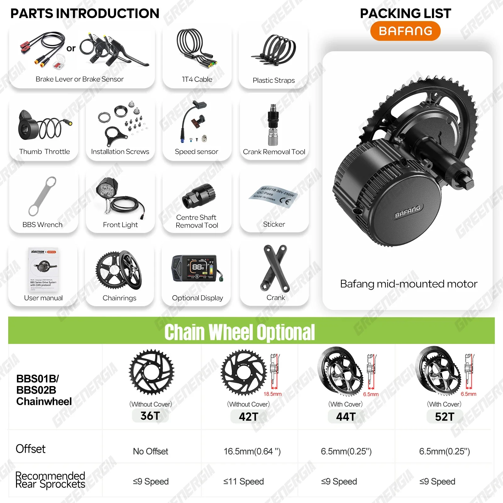
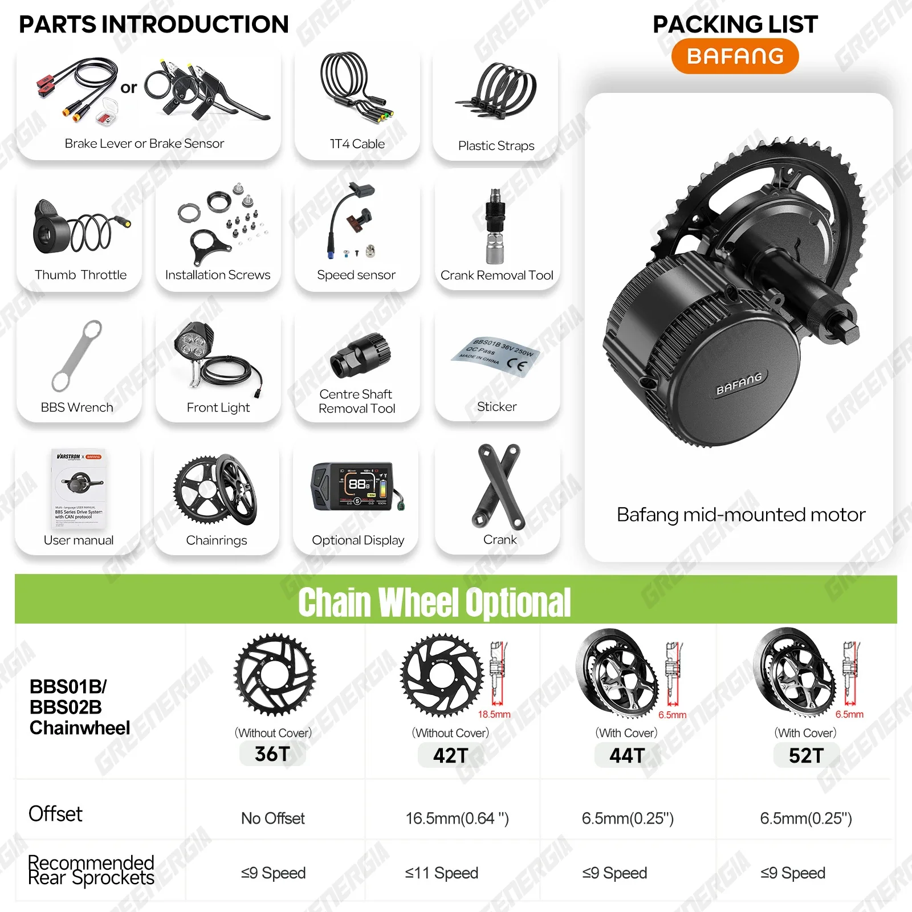

Kit di conversione eBike con motore centrale BAFANG BBS02/BBS02B da 750 W e 48 V, motore per bicicletta elettrica, movimento centrale da 68 mm, corona da 100 mm
Scatena la potenza della trasformazione con il kit di conversione per bicicletta elettrica Bafang BBS02B. Questo robusto kit motore centrale si integra perfettamente nella tua bicicletta, garantendole capacità elettrizzanti e spingendoti verso una nuova era del ciclismo.
La potenza da 750 W offre un'accelerazione esaltante e una guida senza sforzo su qualsiasi terreno. Prova l'emozione di pedalare con potenza fino a 48 V, superando salite e distanze con facilità.
- Posizionamento del motore centrale per una coppia ottimale e una sensazione di pedalata naturale.
- Compatibilità con pedivelle da 68 mm / 100 mm, per un adattamento perfetto alla tua trasmissione esistente.
- Un potente motore centrale che ridefinisce la tua esperienza ciclistica, rendendo ogni uscita un'avventura.
Trasforma la tua bicicletta in una macchina elettrica ad alte prestazioni. Goditi la libertà e l'efficienza dell'e-cycling con il kit di conversione Bafang BBS02B.
Il kit motore centrale Bafang BBS02B da 750 W è una soluzione di conversione potente e versatile per trasformare la tua bicicletta in una bici elettrica. Questo motore ad alte prestazioni offre un'accelerazione fluida e reattiva e un'erogazione di potenza efficiente, rendendolo ideale sia per la guida occasionale che per i terreni più impegnativi.
- Potenza di uscita di 750 W: Sperimenta una coppia impressionante e capacità di salita senza sforzo con questo motore ad alta potenza.
- Tensione di sistema di 48 V: fornisce ampia potenza per una guida dinamica ed esaltante.
- Posizionamento del motore centrale: questa posizione di montaggio centrale offre maggiore stabilità, distribuzione del peso e reattività della pedalata assistita.
- Compatibilità con movimento centrale da 68 mm/100 mm: si integra perfettamente con vari design di telaio di bicicletta.
Il kit di conversione per bici elettrica BBS02B è meticolosamente progettato per offrire elevate prestazioni e affidabilità. La sua struttura robusta garantisce durevolezza, mentre il design compatto consente una facile installazione sulla maggior parte delle biciclette.
- Tipo di motore: motore brushless
- Potenza in uscita: 750 W
- Tensione: 48 V
- Dimensioni del movimento centrale: 68 mm/100 mm
- Interfaccia display: compatibile con vari display LCD (venduti separatamente)
Trasforma la tua bicicletta in una bici elettrica potente ed efficiente con il kit Bafang BBS02B. Goditi una serie di vantaggi che migliorano la tua esperienza di guida:
- Salita senza sforzo: conquista pendenze ripide con facilità grazie alla potenza del motore robusto.
- Autonomia di guida estesa: percorri distanze più lunghe senza affaticarti, permettendoti di esplorare ulteriormente.
- Sforzo fisico ridotto: goditi una guida più rilassata e piacevole, soprattutto su lunghi tragitti o terreni impegnativi.
- Trasporto ecologico: riduci le tue emissioni di carbonio scegliendo una bici elettrica come mezzo di trasporto principale.
Il kit Bafang BBS02B è progettato per una facile installazione e un funzionamento intuitivo. Può essere integrato nella maggior parte delle biciclette con movimento centrale da 68 mm o 100 mm. La potenza del motore è regolabile, consentendoti di personalizzare la tua esperienza di guida in base alle tue esigenze e preferenze.
Ricordati di consultare il manuale utente per istruzioni dettagliate su installazione, cablaggio e funzionamento.